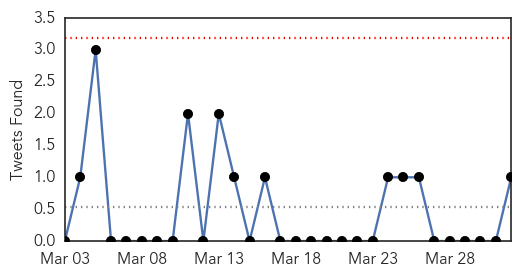
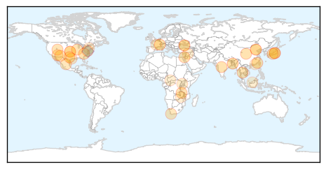

30 Day Trends
Web: 0 alerts, 0 warnings
Twitter: 0 alerts, 0 warnings
Top Articles:
- 0.917
- Chicago Tribune
- 0.917
- Chicago Tribune
- 0.917
- Chicago Tribune
- 0.917
- Chicago Tribune
- 0.917
- Chicago Tribune
- 0.917
- Chicago Tribune
- 0.917
- Chicago Tribune
- 0.917
- Chicago Tribune
- 0.917
- Chicago Tribune
- 0.910
- The world windows to Thailand
- 0.902
- Kasama General hospital management appeals to government to speed up its upgrade
- 0.886
- News Scan for Mar 31, 2014
- 0.866
- Different saline products sit in a closet ready for use at Intermountain Healthcare's Utah Valley Regional Medical Center in Provo, Utah
- 0.866
- Nurse prepares a bag of saline at Intermountain Healthcare's Utah Valley Regional Medical Center in Provo
- 0.866
- Kerry cancels meeting with Abbas in Ramallah
- 0.866
- Toshio Koyama, 72, and his wife Kimiko, 69, who evacuated from the Miyakoji area of Tamura three years ago, chats inside their home in Tamura, Fukushima prefecture, Japan
- 0.866
- Gazprom raises gas price for Ukraine to $385.5 per 1,000 cubic metres
- 0.866
- Federal judge won't block Arizona rules limiting use of abortion drugs
- 0.818
- NM health officials maintain norovirus watch in Las Cruces, Silver City
- 0.802
- Collective will can curb TB epidemic
- 0.782
- Norovirus outbreak sickens more than 80 at Good Samaritan Village (updated)
- 0.718
- Outbreak still a mystery
- 0.634
- Calgary veterinary school investigating cases of infectious dog disease
- 0.613
- The most from the coast
- 0.612
- Food shortages loom as aid workers flee west Myanmar
- 0.566
- Food shortages loom in Rakhine State
- 0.558
- Prominent French historian Jacques Le Goff dies at 90
- 0.541
- French envoy calls on UN to scrap veto in cases of atrocity
- 0.541
- Martin Parr’s ‘Paris’ photo exhibit captures everyday life in French capital
- 0.541
- EU launches military operation in Central African Republic
- 0.536
- Malaysia ‘got it wrong’ on last words from missing plane
- 0.536
- Valls sworn in as PM in Hollande’s ‘last throw of the dice’
- 0.536
- Chinese corruption investigation hints at power struggle
- 0.526
- Overuse of blood transfusions increases infection risk
- 0.520
- Insecticide-treated nets working to dramatically curb malaria in Zambia
- 0.505
- NATO suspends co-operation with Russia over Ukraine
- 0.505
- Video: Democracy offers little hope for rebellious Chinese village
Top Tweets:
- 0.813
- The flu is no joke. The flu and common cold may have similar symptoms, but the flu tends to be more severe.
Web/News Articles

Tweets
Article Locations
Article Confidences